Soluciones digitales escalables, robustas y seguras.
Soy Carlos Expósito, desarrollador con +8 años de experiencia especializado en arquitecturas backend de alta concurrencia (Java 21 / Spring Boot), despliegues cloud en AWS/GCP, desarrollo de plataformas web para clientes y peritaje informático judicial.

Carlos Expósito
¿Qué problemas resuelvo para ti?
Combino una sólida ingeniería backend con desarrollo frontend moderno y garantías de seguridad jurídica y técnica.
Arquitectura Backend & Cloud
Diseño de microservicios resilientes, APIs de baja latencia y bases de datos escalables con Java 21, Spring Boot y despliegues en AWS y Google Cloud.
- Java 21+ & Spring Boot 3
- AWS, Docker & Kubernetes
- Concurrencia (Virtual Threads / Loom)
- CI/CD y Calidad con SonarQube
Desarrollo Web & Plataformas
Creación de sitios web corporativos y herramientas para empresas. Interfaces rápidas, diseño responsive adaptable a móviles y optimización SEO para captar clientes.
- Webs corporativas de alta conversión
- JavaScript / TypeScript & React
- Rendimiento óptimo (Core Web Vitals)
- Posicionamiento SEO técnico y local
Peritaje Forense & Ciberseguridad
Análisis forense de evidencias digitales, extracción e informe pericial de mensajería (WhatsApp), análisis de ciberdelitos e investigaciones laborales válidas ante tribunales.
- Perito Colegiado Oficial nº 03624
- Cadena de custodia norma ISO 27037
- Dictámenes periciales inatacables
- Ratificación y defensa en juicio
Casos de Éxito y Proyectos
Filtra por categoría para ver las webs en producción para clientes, las librerías open source que he publicado o los laboratorios de IA y demos interactivas.
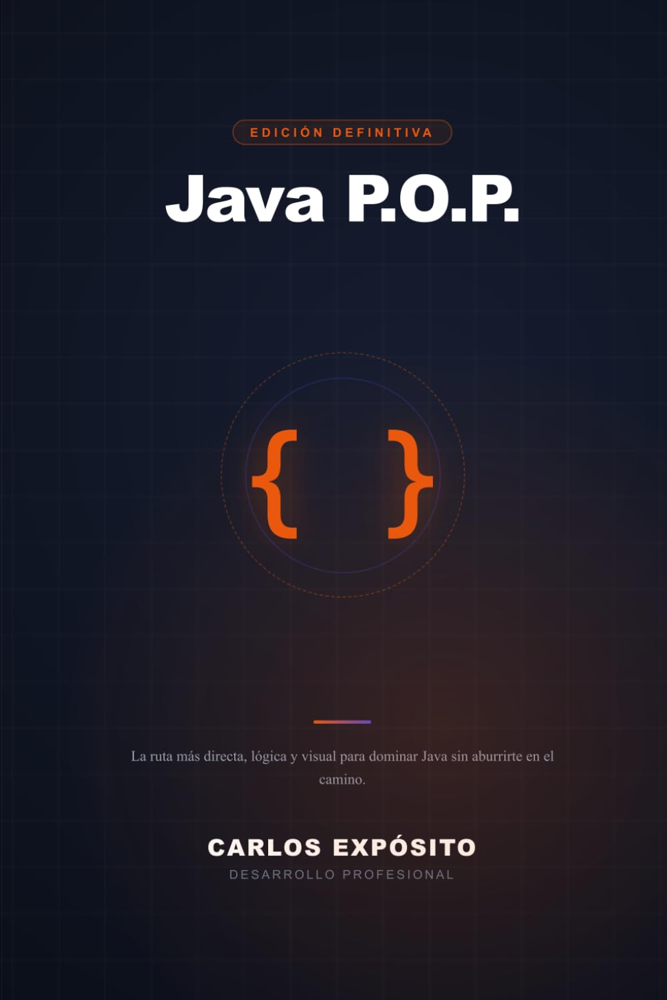
Best SellerJava POP: Programación Orientada a Principiantes
Guía exhaustiva y accesible para dominar la programación orientada a objetos desde cero. Fundamentos de sintaxis moderna, diseño de clases, encapsulamiento, colecciones y buenas prácticas en Java.
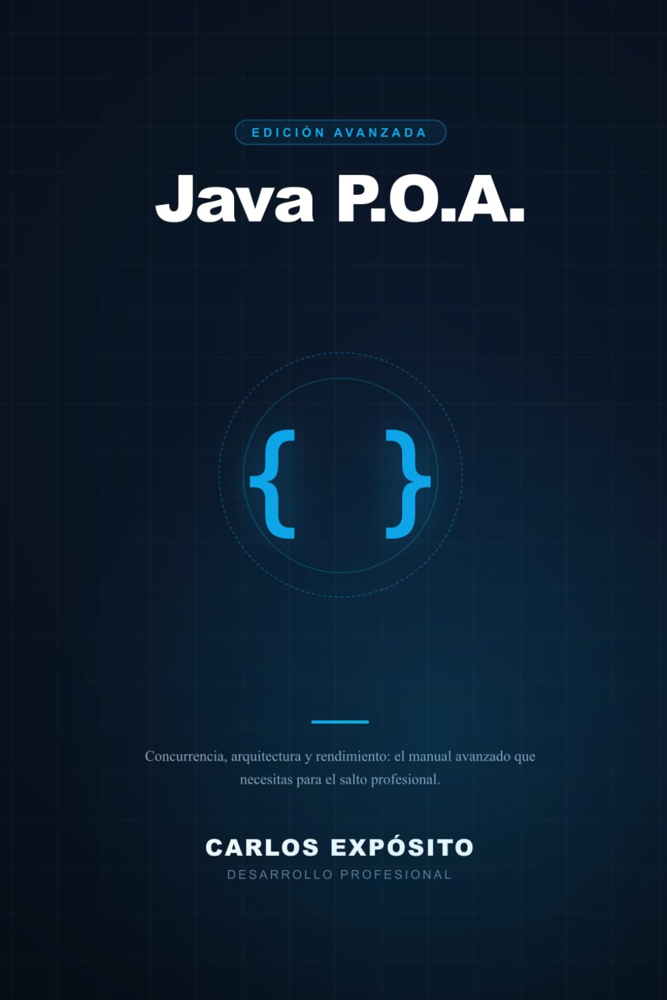
Nivel AvanzadoJava P.O.A.: Programación Orientada a Avanzados
Inmersión en concurrencia moderna, arquitectura interna de la JVM, Project Loom (Virtual Threads), optimización de memoria/GC y patrones arquitectónicos para microservicios de alto rendimiento.
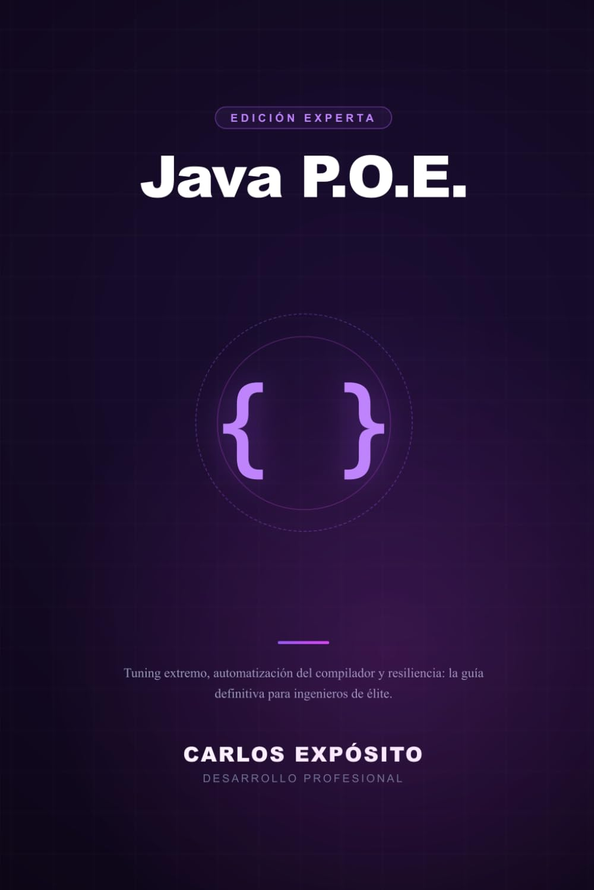
Nivel ExpertoJava POE: Programación Orientada a Expertos
Diseño de sistemas distribuidos a hiperescala, arquitecturas low-latency, criptografía aplicada, resiliencia empresarial, cloud native y seguridad crítica en producción.
CE Análisis Digital
Plataforma web y despacho profesional de peritaje informático forense (Colegiado nº 03624, Barcelona). Metodología bajo norma ISO 27037 de cadena de custodia, peritaje de WhatsApp, ciberdelitos y ratificación judicial.
Transportes Expósito Toledo
Sitio web corporativo de transporte urgente de mercancías 24h directo en furgoneta sin transbordos (Toledo, España y Portugal). Diseño responsive moderno, optimización de conversión rápida y posicionamiento SEO local.
 En Producción
En Producción
Ibestan — Web profesional
Web corporativa desarrollada para Ibérica de Estanqueidad, empresa industrial líder en soluciones de estanqueidad técnica. Catálogo digital estructurado, diseño responsive y SEO optimizado.
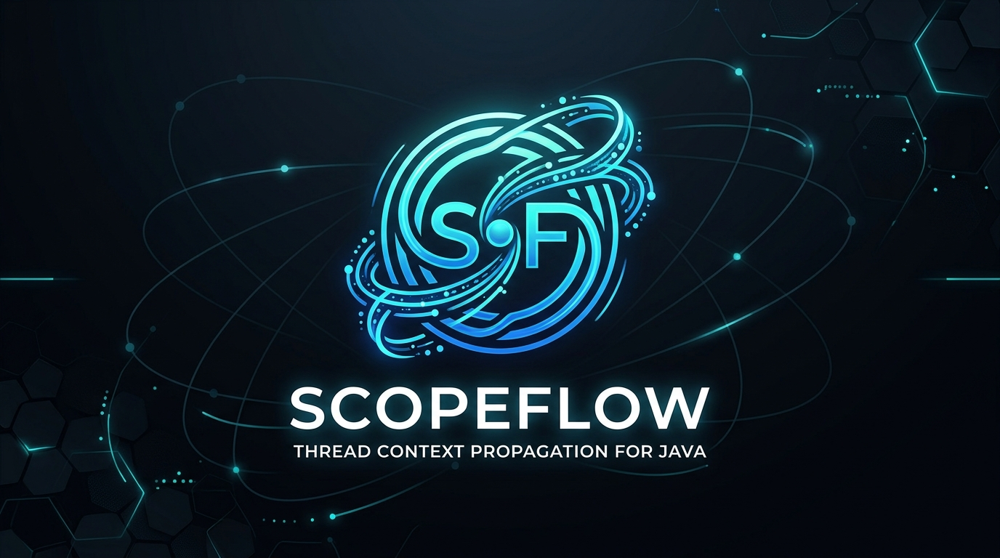
Open SourceScopeFlow
Librería Java para propagación automática de contexto entre hilos. Resuelve la pérdida del MDC en virtual threads con Spring Boot starter, bridge a OpenTelemetry y Micrometer, CI/CD y 96 tests.
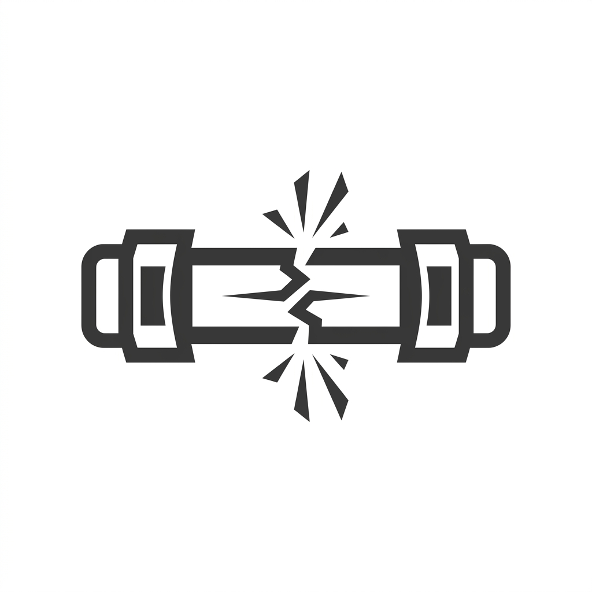
Open SourceFuse
Librería Java ultra ligera de Circuit Breaker para microservicios. Cero dependencias en runtime (100% JDK concurrente lock-free con AtomicReference CAS), JAR menor a 20 KB, soporte Maven/Gradle y umbrales configurables.
OpenAPIGuard
Librería de validación de seguridad para especificaciones OpenAPI/Swagger. Detecta vulnerabilidades OWASP Top 10 y genera reportes SARIF automáticos listos para integrar en pipelines CI/CD.
AuthForge
Starter kit completo de autenticación y autorización para microservicios: JWT, OAuth2 (Google/GitHub), 2FA TOTP, Rate Limiting, Feature Flags y SonarQube con 100% de cobertura.
AgentGuard
Firewall y suite de seguridad para aplicaciones de Inteligencia Artificial en Java (Spring AI, LangChain4j). Enmascaramiento reversible de PII con validación Luhn, firewall contra prompt injections, control de cuotas de tokens y aspecto declarativo @SecurePrompt.
EvidenceChain
Libro mayor criptográfico inmutable con árboles de Merkle y SHA-256 para trazabilidad probatoria de eventos. Diseñado bajo metodología pericial judicial (Colegiado nº 03624), verificación de inclusión O(log N), exportación de dictámenes y aspecto @AuditedEvidence.
LoomDoctor
Herramienta de telemetría y diagnóstico en tiempo real para Virtual Threads en Java 21+ (Project Loom). Detección de carrier thread pinning en bloques sincronizados, monitor de saturación de connection pools y endpoint nativo Spring Boot Actuator.
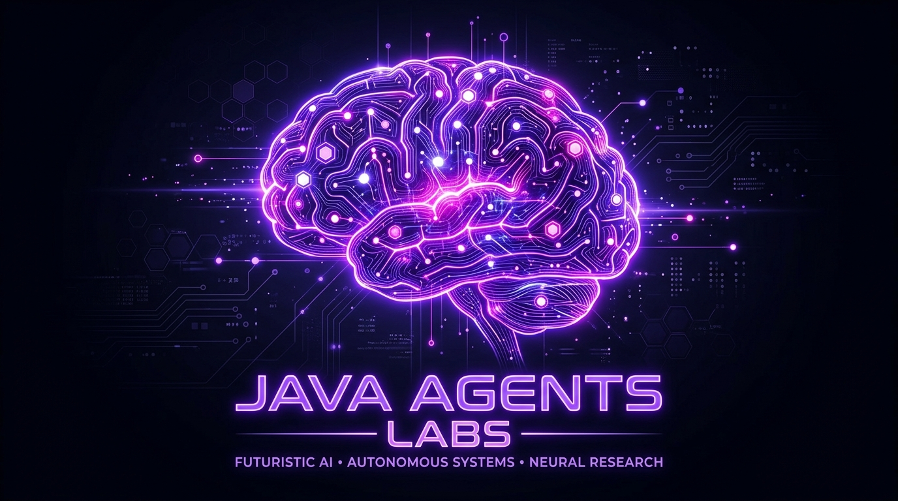
IA & LLMJava Agents Labs
Laboratorio experimental para creación y orquestación de agentes autónomos de Inteligencia Artificial en Java 21 utilizando LangChain4j y modelos LLM de OpenAI.
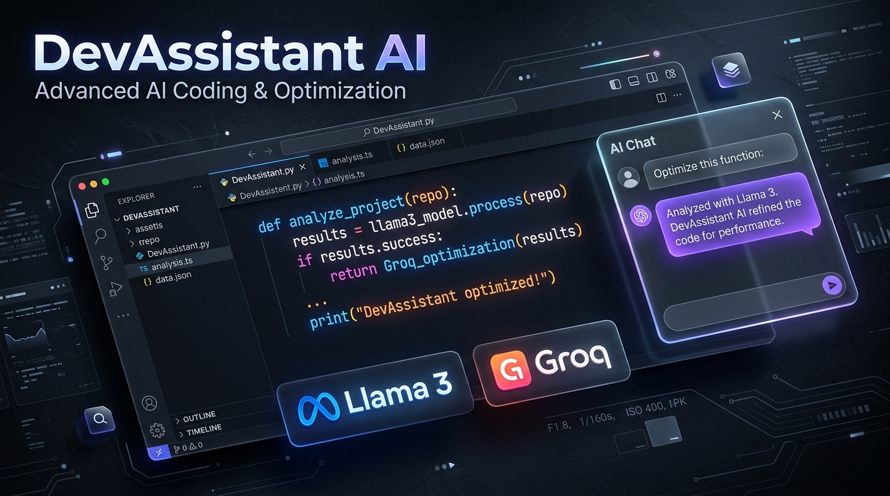
Demo en VivoDevAssistant AI
Asistente virtual para desarrolladores conectado a la API de Groq / Llama 3 con inferencia ultrarrápida, parseo de markdown y resaltado de código en tiempo real.
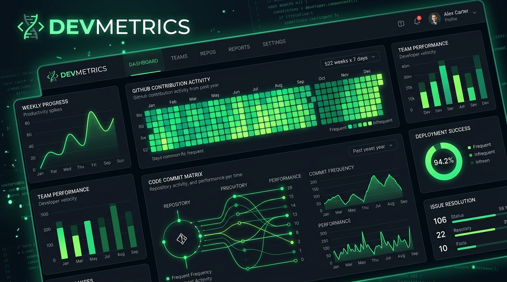
Demo en VivoDevMetrics Dashboard
Dashboard interactivo visual para GitHub con mapa de calor SVG y gráficos dinámicos de contribuciones en vivo sin requerir dependencias pesadas.
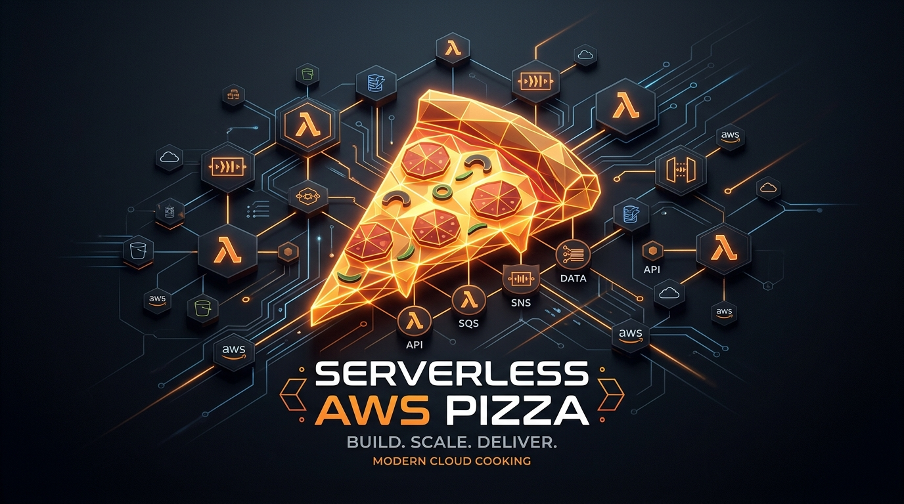
Cloud ArchitectureServerless AWS Pizza
Arquitectura serverless en AWS con funciones Lambda, colas de mensajería Amazon SQS y Serverless Framework en Node.js para procesamiento de pedidos asíncrono.
Microexpressions Detector
Reconocimiento de microexpresiones faciales y emociones en tiempo real mediante TensorFlow.js directamente en el navegador del usuario sin servidores externos.
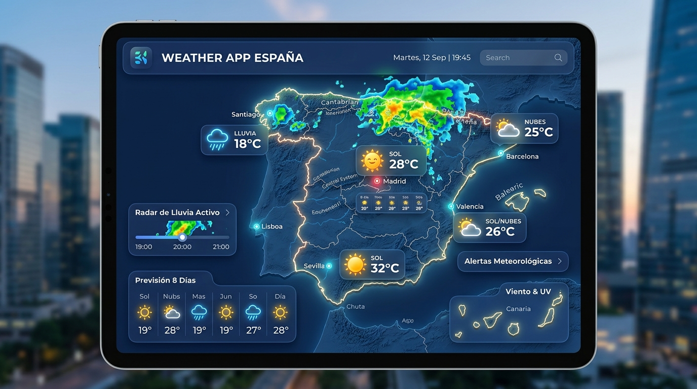
Demo en VivoWeather App España
Mapa del tiempo interactivo para ciudades españolas con Leaflet.js y Open-Meteo API. Búsqueda instantánea, marcadores dinámicos y previsión detallada.
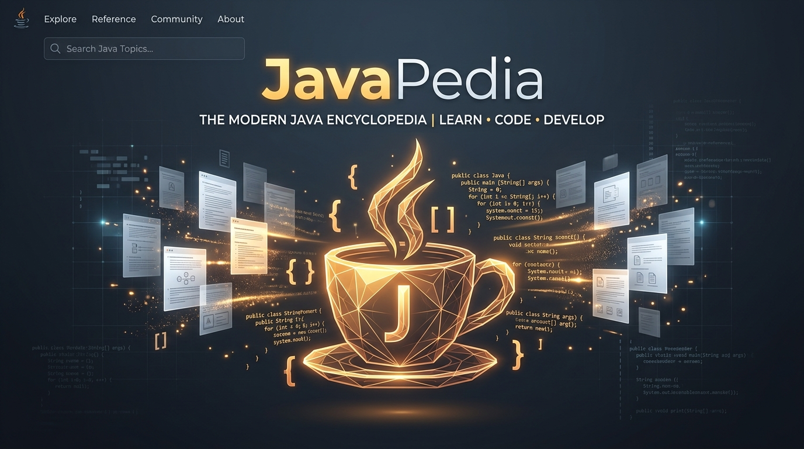
Demo en VivoJavaPedia — Enciclopedia Java
Referencia técnica exhaustiva de Java con 20 secciones, ejemplos prácticos, buscador integrado y soporte bilingüe (Español / Inglés).
 Videojuego 3D
Videojuego 3D
Cursed Cemetery
Videojuego de terror 3D desarrollado en Unreal Engine 5 y publicado en itch.io. Incluye sistema de físicas, nivel completo, iluminación inmersiva y objetivos.
Trayectoria Profesional
Más de 8 años construyendo software en sectores críticos: ciberseguridad, energía, logística automatizada y consultoría tecnológica.
Desarrollo de aplicaciones empresariales escalables con Java y Spring Boot. Implementación y mantenimiento de microservicios en ecosistema AWS, optimizando despliegues y colaborando en squads ágiles internacionales.
Liderazgo técnico de un equipo de 6 desarrolladores para proyectos del sector de la ciberseguridad. Toma de decisiones en arquitectura hexagonal, gestión de BBDD relacionales y NoSQL (Elasticsearch), e impartición de formación técnica a clientes y niveles L2/L3.
Liderazgo técnico en proyectos del sector energético. Desarrollo de soluciones escalables, gestión de equipos y coordinación con stakeholders técnicos y de negocio.
Análisis y desarrollo de sistemas de automatización logística. Implementación de soluciones para almacenes automatizados con equipos internacionales usando Spring Boot y Oracle.
Instalación y configuración de software logístico en instalaciones de clientes en más de 30 países. Programación de personalizaciones, cooperación con departamentos en Austria y formación de clientes.
DevOps en Telefónica. Desarrollo web con HTML, CSS, PHP, JavaScript y AJAX. Participación activa en reuniones Scrum y desarrollo ágil de aplicaciones.
Atención al público, soporte técnico, mantenimiento de software para clientes, técnico de hardware y formación de usuarios en nuevos sistemas.
Sobre Mí & Habilidades
Empecé a programar a los 14 años creando páginas web en PHP y desde entonces la tecnología se convirtió en mi vocación. Cursé la carrera de Ingeniería Informática en la Universitat Oberta de Catalunya (UOC) mientras trabajaba en el sector.
A lo largo de más de 8 años de carrera he transitado por sectores de alta exigencia técnica como la automatización logística internacional (+30 países), la ciberseguridad defensiva, el sector energético y la consultoría enterprise.
Además de mi faceta como desarrollador de software y librerías open source, soy Perito Informático Forense Colegiado (nº 03624), aplicando metodologías forenses y normativa ISO 27037 para la validez probatoria de evidencias digitales.
También soy autor de la Trilogía de Libros Java en Amazon (Java POP, Java POA y Java POE), donde sintetizo años de experiencia en desarrollo software: desde la programación orientada a objetos moderna hasta la arquitectura interna de la JVM, concurrencia avanzada con Project Loom y sistemas distribuidos en la nube.
Grado en Ingeniería Informática
Universitat Oberta de Catalunya (UOC) · 2019 — 2024CFGS Administración de Sistemas Informáticos en Red
IES Albarregas · 2012 — 2014Lenguajes de Programación
Frameworks & Arquitectura
Cloud & DevOps
Bases de Datos & Mensajería
¿Iniciamos una colaboración?
Tanto si buscas un ingeniero backend senior para tu equipo, como si necesitas desarrollar una web corporativa para tu negocio o requieres un informe pericial informático judicial, estaré encantado de escucharte.